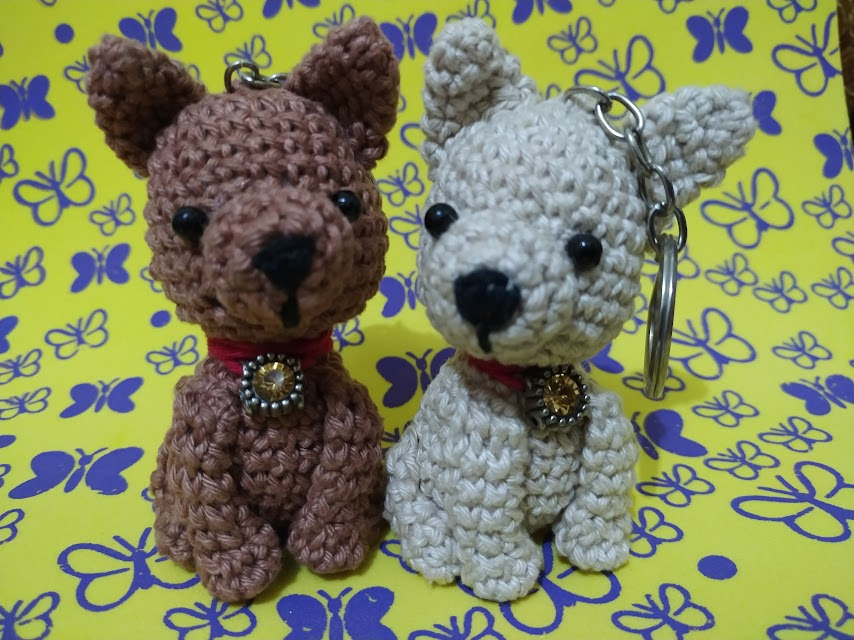

O que é amigurumi?

Amigurumi é a arte de fazer bicho de pelúcia de crochê ou tricô. O nome vem do Japão, onde a técnica foi criada nos anos 80 e significa: Amigurumi (編みぐるみ? lit. bicho de pelúcia feito de crochê). Ela é basicamente constituída de criar peças quase inteiramente feitas no formato redondo e cilíndrico, na sua maioria usando ponto baixo. Onde vai-se modelando a peça com aumentos e reduções conforme a necessidade.
Como é um amigurumi?
O tamanho não tem limite, os materiais usados são os mais diversos, mas predominando linha de crochê de algodão ou lã e uma agulha adequada a linha. O enchimento geralmente é fibra siliconada, mas também pode-se usar o material disponível para esse fim em cada região ou nenhum enchimento, dependendo da finalidade da peça. Outro detalhe é que nem sempre há necessidade de fazer bocas, olhos e narizes, já que há uma estilização de alguns modelos.
Como aprender?
Crochê é um trabalho que qualquer pessoa pode fazer em qualquer idade e no começo pode até não sair como se espera, mas se você está começando, tente sempre terminar o trabalho, mesmo que seja um pequeno quadradinho porta copo ou um tapetinho pra pôr na frente da porta. Mesmo que fique tortinho ou mais esburacado do que deveria, a medida que você vai praticando, vai ficando cada vez mais perfeito. Mas, se você já sabe, e quer aprender como fazer amigurumi do zero, acesse a seção "Receitas", e lá você vai aprender tudo, desde o começo.